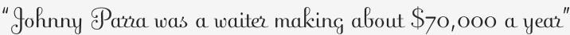

“Johnny Parra was a waiter making about $70,000 a year”
And bought himself a sex change (source). God damn I knew waiters in New York raked it in, but this is nuts.
Perhaps that’s why they seem to think they’re better than you: they actually are making more money. The next time you, the underpaid writer/designer/coder/teacher, feel compelled to tip someone 20% who’s served you a cold dish of attitude, think twice. Bitches aren’t even paying tax on that take.
And in case you’re still wringing your hands:
Even a buser can make more than $40,000 a year with benefits.
Tipping is bullshit.
Backtalk
Tell that to the woman who works the 3 am shift at Eat ‘N Park.
Poor woman, I’m sure she gets stiffed by every third customer at that hour–yet another reason that tipping is bullshit! If anyone actually cared about these worst case scenarios they would support banning tips in favor of regular wages for all restaurant workers. But the only way to make $70k serving tables is by turning yourself into a glorified charity case, so here we are.
Feel free to counter-post, Carlsbarls. I’m ready for you to start crankin’ them out.
Add a comment